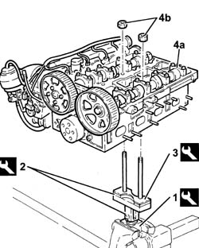
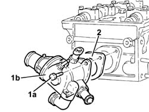
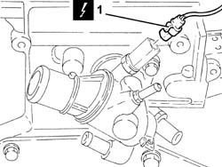
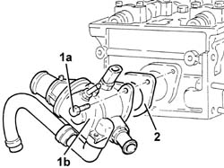

1088C42 thermostat - r + r with cylinder head removed
- Path
- Procedures > 10 ENGINE > 1088 ENGINE COOLING > 1088C water pump and thermostat > 1088C42 thermostat - r + r with cylinder head removed
- Kind
- repair procedure (removal / refitting; the operation number is the code)
- Applies to
- engines: 1.6 TS, 2.0 TS; all production periods
- Interactive page
- https://sloeber94.github.io/elrnDB-a147/en/#/3026004
Applies to: engines: 1.6 TS; all production periods
 Removing
Removing
 Refitting
Refitting1. Position the tool in the vice.
 | Name | Country |
|---|---|---|
1 | Mount | 1.820.012.000 |
2. Fit the tool.
| Name | Country |
|---|---|---|
2 | Mount | 1.820.258.000 |
3. Fit the tool.
| Name | Country |
|---|---|---|
3 | Spacer | 1.820.267.000 |
4. Position the cylinder head (4a) on the supporting tools and fix it using the nuts (4b).

Applies to: engines: 1.6 TS; all production periods
1. Disconnect the electrical connection from the engine coolant temperature sensor.
 | Name | Connector |
|---|---|---|
1 | Engine temperature sender unit |

Applies to: engines: 1.6 TS; all production periods
1. Undo the bolts (1a) and remove the complete thermostat (1b).
2. Remove the seal.

Applies to: engines: 1.6 TS; all production periods
Refitting
RemovingFit the thermostat complete with pipe and gasket and fix it tightening the bolts to the recommended torque.
 | Fastening | Component | Ø | Value (daNm) |
|---|---|---|---|---|
- | - | - | - | - |
Connect the electrical connection to the engine coolant temperature sensor.
Remove the cylinder head from the support tools.
Remove the cylinder head support tools from the vice and return them.
Applies to: engines: 2.0 TS; all production periods
Removing
RefittingPosition the cylinder head on a suitable workbench.
1. Disconnect the electrical connection from the engine coolant temperature sensor.
| Name | Connector |
|---|---|---|
1 | Engine temperature sender unit |

Applies to: engines: 2.0 TS; all production periods
1. Undo the bolts (1a) and remove the thermostat (1b).
2. Remove the seal.

Applies to: engines: 2.0 TS; all production periods
Refitting
RemovingFit the thermostat, complete with gasket, and fix it tightening the bolts to the recommended torque.
| Fastening | Component | Ø | Value (daNm) |
|---|---|---|---|---|
- | Bolt | THERMOSTAT | M8 | (Cylinder head side) 2.3 ÷ 2.8 |
Connect the electrical connection to the engine coolant temperature sensor.